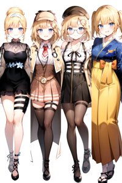
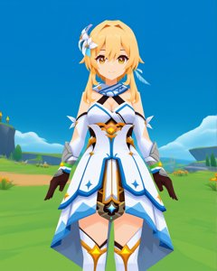
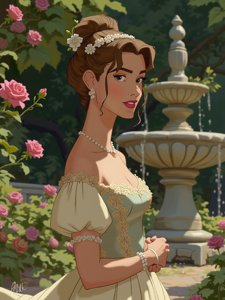
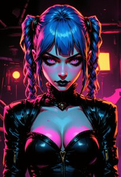
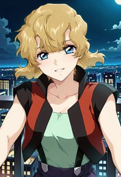
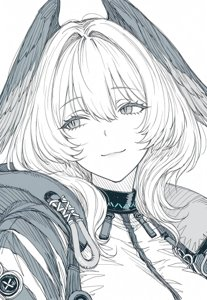
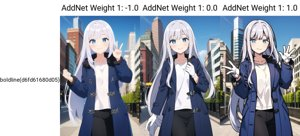
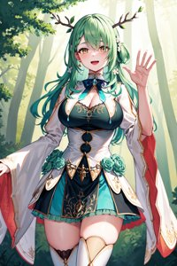
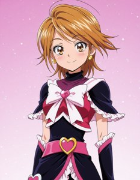
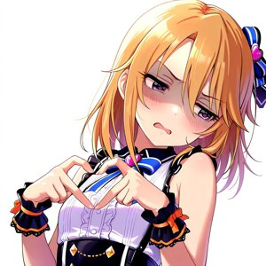

SD1.5 対応 おすすめLoRA一覧
対応モデルごとに分類されたLoRA一覧です。各カテゴリーを選択してください。全 971 ファイル。
SD1.5 (100 items on this page / Total 391 items)

SD1.5
キャラ
ace-step-v1-chinese-rap-lora
「ace step v1 chinese rap lora」を精密に再現する追加学習モデルです。Stable DiffusionのAI画像生成において、特徴的な容姿や表情をLoRAで安定させて描画。ハイクオリティな特定キャラ画像を生成したい方に最適です。
Size: 523,816,352
SD1.5
画風
aesthetic_anime_v1s
「aesthetic anime v1s」の独特なタッチを反映する追加学習モデル。Stable DiffusionでのAI画像生成で、色彩や質感をLoRAにより一変させます。独創的で芸術性の高い作品を追求するクリエイターにおすすめです。
Size: 340,768,396
SD1.5
キャラ
agomaru
「agomaru」を精密に再現する追加学習モデルです。Stable DiffusionのAI画像生成において、特徴的な容姿や表情をLoRAで安定させて描画。ハイクオリティな特定キャラ画像を生成したい方に最適です。
Size: 9,549,897
SD1.5
キャラ
ahegao
「ahegao」を精密に再現する追加学習モデルです。Stable DiffusionのAI画像生成において、特徴的な容姿や表情をLoRAで安定させて描画。ハイクオリティな特定キャラ画像を生成したい方に最適です。
Size: 21,673,689
SD1.5
キャラ
Ahegaoo
「Ahegaoo」を精密に再現する追加学習モデルです。Stable DiffusionのAI画像生成において、特徴的な容姿や表情をLoRAで安定させて描画。ハイクオリティな特定キャラ画像を生成したい方に最適です。
Size: 151,124,310
SD1.5
キャラ
ahri-000045
「ahri 000045」を精密に再現する追加学習モデルです。Stable DiffusionのAI画像生成において、特徴的な容姿や表情をLoRAで安定させて描画。ハイクオリティな特定キャラ画像を生成したい方に最適です。
Size: 151,073,665
SD1.5
キャラ
ahri_v10
「ahri v10」を精密に再現する追加学習モデルです。Stable DiffusionのAI画像生成において、特徴的な容姿や表情をLoRAで安定させて描画。ハイクオリティな特定キャラ画像を生成したい方に最適です。
Size: 37,879,925

SD1.5
キャラ
Aino Minako
「Aino Minako」を精密に再現する追加学習モデルです。Stable DiffusionのAI画像生成において、特徴的な容姿や表情をLoRAで安定させて描画。ハイクオリティな特定キャラ画像を生成したい方に最適です。
Size: 228,458,540
SD1.5
キャラ
AiriAkizukiV1
「AiriAkizukiV1」を精密に再現する追加学習モデルです。Stable DiffusionのAI画像生成において、特徴的な容姿や表情をLoRAで安定させて描画。ハイクオリティな特定キャラ画像を生成したい方に最適です。
Size: 22,525,340
SD1.5
キャラ
AkaneV1.2
「AkaneV1.2」を精密に再現する追加学習モデルです。Stable DiffusionのAI画像生成において、特徴的な容姿や表情をLoRAで安定させて描画。ハイクオリティな特定キャラ画像を生成したい方に最適です。
Size: 18,991,325
SD1.5
キャラ
akizukikaini-10(ILL)
「akizukikaini 10(ILL)」を精密に再現する追加学習モデルです。Stable DiffusionのAI画像生成において、特徴的な容姿や表情をLoRAで安定させて描画。ハイクオリティな特定キャラ画像を生成したい方に最適です。
Size: 50,933,028

SD1.5
キャラ
Alice v2.0
「Alice v2.0」を精密に再現する追加学習モデルです。Stable DiffusionのAI画像生成において、特徴的な容姿や表情をLoRAで安定させて描画。ハイクオリティな特定キャラ画像を生成したい方に最適です。
Size: 151,111,285
SD1.5
キャラ
alice-lora-v3-32dim-20ep
「alice lora v3 32dim 20ep」を精密に再現する追加学習モデルです。Stable DiffusionのAI画像生成において、特徴的な容姿や表情をLoRAで安定させて描画。ハイクオリティな特定キャラ画像を生成したい方に最適です。
Size: 37,871,943

SD1.5
画風
Alp Style 2.0
「Alp Style 2.0」の独特なタッチを反映する追加学習モデル。Stable DiffusionでのAI画像生成で、色彩や質感をLoRAにより一変させます。独創的で芸術性の高い作品を追求するクリエイターにおすすめです。
Size: 101,574,036
 flexible.jpg)
SD1.5
その他
amber (genshin impact) flexible
「amber (genshin impact) flexible」に特化した追加学習モデルです。Stable DiffusionでのAI画像生成にLoRAを導入し、特定要素の再現性を劇的に向上。効率的かつ高品質なビジュアルを求める全てのAI絵師必見のモデルです。
Size: 151,073,665

SD1.5
キャラ
ame-10
「ame 10」を精密に再現する追加学習モデルです。Stable DiffusionのAI画像生成において、特徴的な容姿や表情をLoRAで安定させて描画。ハイクオリティな特定キャラ画像を生成したい方に最適です。
Size: 37,964,947
SD1.5
キャラ
anastasia_(idolmaster)_v2
「anastasia (idolmaster) v2」を精密に再現する追加学習モデルです。Stable DiffusionのAI画像生成において、特徴的な容姿や表情をLoRAで安定させて描画。ハイクオリティな特定キャラ画像を生成したい方に最適です。
Size: 37,879,838
SD1.5
キャラ
android18
「android18」を精密に再現する追加学習モデルです。Stable DiffusionのAI画像生成において、特徴的な容姿や表情をLoRAで安定させて描画。ハイクオリティな特定キャラ画像を生成したい方に最適です。
Size: 151,121,421
SD1.5
キャラ
android_18_v110
「android 18 v110」を精密に再現する追加学習モデルです。Stable DiffusionのAI画像生成において、特徴的な容姿や表情をLoRAで安定させて描画。ハイクオリティな特定キャラ画像を生成したい方に最適です。
Size: 151,118,700

SD1.5
キャラ
AnimaLowPoly
「AnimaLowPoly」を精密に再現する追加学習モデルです。Stable DiffusionのAI画像生成において、特徴的な容姿や表情をLoRAで安定させて描画。ハイクオリティな特定キャラ画像を生成したい方に最適です。
Size: 264,419,968

SD1.5
キャラ
animation2k_v1
「animation2k v1」を精密に再現する追加学習モデルです。Stable DiffusionのAI画像生成において、特徴的な容姿や表情をLoRAで安定させて描画。ハイクオリティな特定キャラ画像を生成したい方に最適です。
Size: 171,969,352
SD1.5
キャラ
animemix_v3_offset
「animemix v3 offset」を精密に再現する追加学習モデルです。Stable DiffusionのAI画像生成において、特徴的な容姿や表情をLoRAで安定させて描画。ハイクオリティな特定キャラ画像を生成したい方に最適です。
Size: 151,108,831
SD1.5
キャラ
Anime_Rose_Garden_Girls
「Anime Rose Garden Girls」を精密に再現する追加学習モデルです。Stable DiffusionのAI画像生成において、特徴的な容姿や表情をLoRAで安定させて描画。ハイクオリティな特定キャラ画像を生成したい方に最適です。
Size: 228,455,828
SD1.5
画風
Anime_Style_Ancient_Greek_Toga__Chiton
「Anime Style Ancient Greek Toga Chiton」の独特なタッチを反映する追加学習モデル。Stable DiffusionでのAI画像生成で、色彩や質感をLoRAにより一変させます。独創的で芸術性の高い作品を追求するクリエイターにおすすめです。
Size: 228,457,108
SD1.5
画風
Anime_Style_Chinese_Cheongsam_Dress
「Anime Style Chinese Cheongsam Dress」の独特なタッチを反映する追加学習モデル。Stable DiffusionでのAI画像生成で、色彩や質感をLoRAにより一変させます。独創的で芸術性の高い作品を追求するクリエイターにおすすめです。
Size: 228,459,412
SD1.5
画風
Anime_Style_Japanese_Kimono_Dress
「Anime Style Japanese Kimono Dress」の独特なタッチを反映する追加学習モデル。Stable DiffusionでのAI画像生成で、色彩や質感をLoRAにより一変させます。独創的で芸術性の高い作品を追求するクリエイターにおすすめです。
Size: 228,459,668
SD1.5
キャラ
anmnr01AOM3A1
「anmnr01AOM3A1」を精密に再現する追加学習モデルです。Stable DiffusionのAI画像生成において、特徴的な容姿や表情をLoRAで安定させて描画。ハイクオリティな特定キャラ画像を生成したい方に最適です。
Size: 9,563,328

SD1.5
キャラ
ArcaneFGTNR
「ArcaneFGTNR」を精密に再現する追加学習モデルです。Stable DiffusionのAI画像生成において、特徴的な容姿や表情をLoRAで安定させて描画。ハイクオリティな特定キャラ画像を生成したい方に最適です。
Size: 89,745,224

SD1.5
画風
Arknights-Skadi the Corrupting Heart
「Arknights Skadi the Corrupting Heart」の独特なタッチを反映する追加学習モデル。Stable DiffusionでのAI画像生成で、色彩や質感をLoRAにより一変させます。独創的で芸術性の高い作品を追求するクリエイターにおすすめです。
Size: 75,612,217

SD1.5
その他
Arknights-Specter the Unchained-SOFT
「Arknights Specter the Unchained SOFT」に特化した追加学習モデルです。Stable DiffusionでのAI画像生成にLoRAを導入し、特定要素の再現性を劇的に向上。効率的かつ高品質なビジュアルを求める全てのAI絵師必見のモデルです。
Size: 75,576,093

SD1.5
キャラ
Arknights-Texas the Omertosa
「Arknights Texas the Omertosa」を精密に再現する追加学習モデルです。Stable DiffusionのAI画像生成において、特徴的な容姿や表情をLoRAで安定させて描画。ハイクオリティな特定キャラ画像を生成したい方に最適です。
Size: 75,611,509
SD1.5
キャラ
AS207
「AS207」を精密に再現する追加学習モデルです。Stable DiffusionのAI画像生成において、特徴的な容姿や表情をLoRAで安定させて描画。ハイクオリティな特定キャラ画像を生成したい方に最適です。
Size: 9,585,934

SD1.5
キャラ
Asagi2
「Asagi2」を精密に再現する追加学習モデルです。Stable DiffusionのAI画像生成において、特徴的な容姿や表情をLoRAで安定させて描画。ハイクオリティな特定キャラ画像を生成したい方に最適です。
Size: 228,454,452
SD1.5
キャラ
asagiMutsukiV1
「asagiMutsukiV1」を精密に再現する追加学習モデルです。Stable DiffusionのAI画像生成において、特徴的な容姿や表情をLoRAで安定させて描画。ハイクオリティな特定キャラ画像を生成したい方に最適です。
Size: 75,612,650
SD1.5
キャラ
Astolfo
「Astolfo」を精密に再現する追加学習モデルです。Stable DiffusionのAI画像生成において、特徴的な容姿や表情をLoRAで安定させて描画。ハイクオリティな特定キャラ画像を生成したい方に最適です。
Size: 37,879,638

SD1.5
その他
asuka langley soryu rebuild-lora-nochekaiser
「asuka langley soryu rebuild lora nochekaiser」に特化した追加学習モデルです。Stable DiffusionでのAI画像生成にLoRAを導入し、特定要素の再現性を劇的に向上。効率的かつ高品質なビジュアルを求める全てのAI絵師必見のモデルです。
Size: 37,883,248
SD1.5
キャラ
AsukaLangleySouryuuV2-000015
「AsukaLangleySouryuuV2 000015」を精密に再現する追加学習モデルです。Stable DiffusionのAI画像生成において、特徴的な容姿や表情をLoRAで安定させて描画。ハイクオリティな特定キャラ画像を生成したい方に最適です。
Size: 75,628,192
SD1.5
キャラ
Asuna-BlueArchive
「Asuna BlueArchive」を精密に再現する追加学習モデルです。Stable DiffusionのAI画像生成において、特徴的な容姿や表情をLoRAで安定させて描画。ハイクオリティな特定キャラ画像を生成したい方に最適です。
Size: 19,002,793
SD1.5
キャラ
asuna_(sao)_v1
「asuna (sao) v1」を精密に再現する追加学習モデルです。Stable DiffusionのAI画像生成において、特徴的な容姿や表情をLoRAで安定させて描画。ハイクオリティな特定キャラ画像を生成したい方に最適です。
Size: 37,861,388
SD1.5
キャラ
Asuna_Hard
「Asuna Hard」を精密に再現する追加学習モデルです。Stable DiffusionのAI画像生成において、特徴的な容姿や表情をLoRAで安定させて描画。ハイクオリティな特定キャラ画像を生成したい方に最適です。
Size: 151,073,665
SD1.5
キャラ
AyanamiReiV6-000010
「AyanamiReiV6 000010」を精密に再現する追加学習モデルです。Stable DiffusionのAI画像生成において、特徴的な容姿や表情をLoRAで安定させて描画。ハイクオリティな特定キャラ画像を生成したい方に最適です。
Size: 151,111,198
SD1.5
その他
azurlaneslowahead_v1_noob-000002
「azurlaneslowahead v1 noob 000002」に特化した追加学習モデルです。Stable DiffusionでのAI画像生成にLoRAを導入し、特定要素の再現性を劇的に向上。効率的かつ高品質なビジュアルを求める全てのAI絵師必見のモデルです。
Size: 255,700,636
SD1.5
キャラ
barbara1-000009
「barbara1 000009」を精密に再現する追加学習モデルです。Stable DiffusionのAI画像生成において、特徴的な容姿や表情をLoRAで安定させて描画。ハイクオリティな特定キャラ画像を生成したい方に最適です。
Size: 75,741,903
SD1.5
キャラ
bigeye1
「bigeye1」を精密に再現する追加学習モデルです。Stable DiffusionのAI画像生成において、特徴的な容姿や表情をLoRAで安定させて描画。ハイクオリティな特定キャラ画像を生成したい方に最適です。
Size: 6,865,488

SD1.5
キャラ
bigeye2
「bigeye2」を精密に再現する追加学習モデルです。Stable DiffusionのAI画像生成において、特徴的な容姿や表情をLoRAで安定させて描画。ハイクオリティな特定キャラ画像を生成したい方に最適です。
Size: 7,796,269

SD1.5
キャラ
BirdHatter
「BirdHatter」を精密に再現する追加学習モデルです。Stable DiffusionのAI画像生成において、特徴的な容姿や表情をLoRAで安定させて描画。ハイクオリティな特定キャラ画像を生成したい方に最適です。
Size: 57,433,772

SD1.5
キャラ
BladePointIL
「BladePointIL」を精密に再現する追加学習モデルです。Stable DiffusionのAI画像生成において、特徴的な容姿や表情をLoRAで安定させて描画。ハイクオリティな特定キャラ画像を生成したい方に最適です。
Size: 228,453,292
SD1.5
キャラ
bluethebone
「bluethebone」を精密に再現する追加学習モデルです。Stable DiffusionのAI画像生成において、特徴的な容姿や表情をLoRAで安定させて描画。ハイクオリティな特定キャラ画像を生成したい方に最適です。
Size: 272,903,592

SD1.5
キャラ
boldline
「boldline」を精密に再現する追加学習モデルです。Stable DiffusionのAI画像生成において、特徴的な容姿や表情をLoRAで安定させて描画。ハイクオリティな特定キャラ画像を生成したい方に最適です。
Size: 9,547,800

SD1.5
キャラ
BookBlastIL
「BookBlastIL」を精密に再現する追加学習モデルです。Stable DiffusionのAI画像生成において、特徴的な容姿や表情をLoRAで安定させて描画。ハイクオリティな特定キャラ画像を生成したい方に最適です。
Size: 228,453,284
SD1.5
キャラ
BotanLORA-000006
「BotanLORA 000006」を精密に再現する追加学習モデルです。Stable DiffusionのAI画像生成において、特徴的な容姿や表情をLoRAで安定させて描画。ハイクオリティな特定キャラ画像を生成したい方に最適です。
Size: 19,025,195
SD1.5
キャラ
bows1-000015
「bows1 000015」を精密に再現する追加学習モデルです。Stable DiffusionのAI画像生成において、特徴的な容姿や表情をLoRAで安定させて描画。ハイクオリティな特定キャラ画像を生成したい方に最適です。
Size: 9,621,293
SD1.5
キャラ
breastfeeding_handjob
「breastfeeding handjob」を精密に再現する追加学習モデルです。Stable DiffusionのAI画像生成において、特徴的な容姿や表情をLoRAで安定させて描画。ハイクオリティな特定キャラ画像を生成したい方に最適です。
Size: 75,613,470
SD1.5
キャラ
BrestV1-000006
「BrestV1 000006」を精密に再現する追加学習モデルです。Stable DiffusionのAI画像生成において、特徴的な容姿や表情をLoRAで安定させて描画。ハイクオリティな特定キャラ画像を生成したい方に最適です。
Size: 37,862,528
SD1.5
キャラ
brighter-eye1
「brighter eye1」を精密に再現する追加学習モデルです。Stable DiffusionのAI画像生成において、特徴的な容姿や表情をLoRAで安定させて描画。ハイクオリティな特定キャラ画像を生成したい方に最適です。
Size: 6,865,488

SD1.5
キャラ
BulgePovMissionary_v11
「BulgePovMissionary v11」を精密に再現する追加学習モデルです。Stable DiffusionのAI画像生成において、特徴的な容姿や表情をLoRAで安定させて描画。ハイクオリティな特定キャラ画像を生成したい方に最適です。
Size: 359,258,536
SD1.5
キャラ
bulma_v1
「bulma v1」を精密に再現する追加学習モデルです。Stable DiffusionのAI画像生成において、特徴的な容姿や表情をLoRAで安定させて描画。ハイクオリティな特定キャラ画像を生成したい方に最適です。
Size: 37,882,672
SD1.5
その他
C.C._-_Code_Geass_Lelouch_of_the_Rebellion__COMMISSION
「C.C. Code Geass Lelouch of the Rebellion COMMISSION」に特化した追加学習モデルです。Stable DiffusionでのAI画像生成にLoRAを導入し、特定要素の再現性を劇的に向上。効率的かつ高品質なビジュアルを求める全てのAI絵師必見のモデルです。
Size: 456,494,820
SD1.5
キャラ
CDBotzILL_epoch_12
「CDBotzILL epoch 12」を精密に再現する追加学習モデルです。Stable DiffusionのAI画像生成において、特徴的な容姿や表情をLoRAで安定させて描画。ハイクオリティな特定キャラ画像を生成したい方に最適です。
Size: 228,459,852

SD1.5
キャラ
ceres_fauna_v2
「ceres fauna v2」を精密に再現する追加学習モデルです。Stable DiffusionのAI画像生成において、特徴的な容姿や表情をLoRAで安定させて描画。ハイクオリティな特定キャラ画像を生成したい方に最適です。
Size: 37,861,388
SD1.5
キャラ
CHAR-FernV2
「CHAR FernV2」を精密に再現する追加学習モデルです。Stable DiffusionのAI画像生成において、特徴的な容姿や表情をLoRAで安定させて描画。ハイクオリティな特定キャラ画像を生成したい方に最適です。
Size: 37,908,936
SD1.5
キャラ
CHAR-FrierenV2
「CHAR FrierenV2」を精密に再現する追加学習モデルです。Stable DiffusionのAI画像生成において、特徴的な容姿や表情をLoRAで安定させて描画。ハイクオリティな特定キャラ画像を生成したい方に最適です。
Size: 37,907,008
SD1.5
キャラ
CHAR-HoshimachiSuiseiV2
「CHAR HoshimachiSuiseiV2」を精密に再現する追加学習モデルです。Stable DiffusionのAI画像生成において、特徴的な容姿や表情をLoRAで安定させて描画。ハイクオリティな特定キャラ画像を生成したい方に最適です。
Size: 37,947,282

SD1.5
キャラ
char-Nakiri Erina-v2
「char Nakiri Erina v2」を精密に再現する追加学習モデルです。Stable DiffusionのAI画像生成において、特徴的な容姿や表情をLoRAで安定させて描画。ハイクオリティな特定キャラ画像を生成したい方に最適です。
Size: 37,861,942
SD1.5
キャラ
CHAR-NakiriAyame_v2
「CHAR NakiriAyame v2」を精密に再現する追加学習モデルです。Stable DiffusionのAI画像生成において、特徴的な容姿や表情をLoRAで安定させて描画。ハイクオリティな特定キャラ画像を生成したい方に最適です。
Size: 19,020,749
SD1.5
キャラ
CHAR-OuroKroniiV2
「CHAR OuroKroniiV2」を精密に再現する追加学習モデルです。Stable DiffusionのAI画像生成において、特徴的な容姿や表情をLoRAで安定させて描画。ハイクオリティな特定キャラ画像を生成したい方に最適です。
Size: 37,913,565
SD1.5
キャラ
CHAR-TaeTakemiV2
「CHAR TaeTakemiV2」を精密に再現する追加学習モデルです。Stable DiffusionのAI画像生成において、特徴的な容姿や表情をLoRAで安定させて描画。ハイクオリティな特定キャラ画像を生成したい方に最適です。
Size: 18,992,982
SD1.5
キャラ
chara-kazusa-v1c
「chara kazusa v1c」を精密に再現する追加学習モデルです。Stable DiffusionのAI画像生成において、特徴的な容姿や表情をLoRAで安定させて描画。ハイクオリティな特定キャラ画像を生成したい方に最適です。
Size: 19,007,600
SD1.5
キャラ
chi-chi_v1
「chi chi v1」を精密に再現する追加学習モデルです。Stable DiffusionのAI画像生成において、特徴的な容姿や表情をLoRAで安定させて描画。ハイクオリティな特定キャラ画像を生成したい方に最適です。
Size: 75,610,358

SD1.5
その他
chisatonishikigis1-lora-nochekaiser
「chisatonishikigis1 lora nochekaiser」に特化した追加学習モデルです。Stable DiffusionでのAI画像生成にLoRAを導入し、特定要素の再現性を劇的に向上。効率的かつ高品質なビジュアルを求める全てのAI絵師必見のモデルです。
Size: 37,893,896
SD1.5
キャラ
chitanda_eru_v10
「chitanda eru v10」を精密に再現する追加学習モデルです。Stable DiffusionのAI画像生成において、特徴的な容姿や表情をLoRAで安定させて描画。ハイクオリティな特定キャラ画像を生成したい方に最適です。
Size: 151,115,671
SD1.5
キャラ
ChunLi_v1
「ChunLi v1」を精密に再現する追加学習モデルです。Stable DiffusionのAI画像生成において、特徴的な容姿や表情をLoRAで安定させて描画。ハイクオリティな特定キャラ画像を生成したい方に最適です。
Size: 151,112,330

SD1.5
その他
Code Geass - C.C. @ c.c.-000010
「Code Geass C.C. @ c.c. 000010」に特化した追加学習モデルです。Stable DiffusionでのAI画像生成にLoRAを導入し、特定要素の再現性を劇的に向上。効率的かつ高品質なビジュアルを求める全てのAI絵師必見のモデルです。
Size: 37,870,275
SD1.5
キャラ
columbina_2a_naiVpred-000039
「columbina 2a naiVpred 000039」を精密に再現する追加学習モデルです。Stable DiffusionのAI画像生成において、特徴的な容姿や表情をLoRAで安定させて描画。ハイクオリティな特定キャラ画像を生成したい方に最適です。
Size: 101,524,220
SD1.5
画風
Concept-dogezaV5-000007
「Concept dogezaV5 000007」の独特なタッチを反映する追加学習モデル。Stable DiffusionでのAI画像生成で、色彩や質感をLoRAにより一変させます。独創的で芸術性の高い作品を追求するクリエイターにおすすめです。
Size: 9,563,724

SD1.5
キャラ
Constricted PupilsV3
「Constricted PupilsV3」を精密に再現する追加学習モデルです。Stable DiffusionのAI画像生成において、特徴的な容姿や表情をLoRAで安定させて描画。ハイクオリティな特定キャラ画像を生成したい方に最適です。
Size: 31,009,375
SD1.5
キャラ
covering_eyes
「covering eyes」を精密に再現する追加学習モデルです。Stable DiffusionのAI画像生成において、特徴的な容姿や表情をLoRAで安定させて描画。ハイクオリティな特定キャラ画像を生成したい方に最適です。
Size: 151,126,825
SD1.5
キャラ
cowprint
「cowprint」を精密に再現する追加学習モデルです。Stable DiffusionのAI画像生成において、特徴的な容姿や表情をLoRAで安定させて描画。ハイクオリティな特定キャラ画像を生成したい方に最適です。
Size: 19,010,317
SD1.5
キャラ
cureanswer_v1
「cureanswer v1」を精密に再現する追加学習モデルです。Stable DiffusionのAI画像生成において、特徴的な容姿や表情をLoRAで安定させて描画。ハイクオリティな特定キャラ画像を生成したい方に最適です。
Size: 228,453,100
SD1.5
キャラ
curebeauty_IL
「curebeauty IL」を精密に再現する追加学習モデルです。Stable DiffusionのAI画像生成において、特徴的な容姿や表情をLoRAで安定させて描画。ハイクオリティな特定キャラ画像を生成したい方に最適です。
Size: 228,455,540

SD1.5
キャラ
cureblack_IL
「cureblack IL」を精密に再現する追加学習モデルです。Stable DiffusionのAI画像生成において、特徴的な容姿や表情をLoRAで安定させて描画。ハイクオリティな特定キャラ画像を生成したい方に最適です。
Size: 228,456,956
SD1.5
キャラ
curewhite_IL
「curewhite IL」を精密に再現する追加学習モデルです。Stable DiffusionのAI画像生成において、特徴的な容姿や表情をLoRAで安定させて描画。ハイクオリティな特定キャラ画像を生成したい方に最適です。
Size: 228,456,020
SD1.5
キャラ
cute_kimono_N_V1_1-000010
「cute kimono N V1 1 000010」を精密に再現する追加学習モデルです。Stable DiffusionのAI画像生成において、特徴的な容姿や表情をLoRAで安定させて描画。ハイクオリティな特定キャラ画像を生成したい方に最適です。
Size: 151,112,840
SD1.5
キャラ
CynthiaLillie_NAI
「CynthiaLillie NAI」を精密に再現する追加学習モデルです。Stable DiffusionのAI画像生成において、特徴的な容姿や表情をLoRAで安定させて描画。ハイクオリティな特定キャラ画像を生成したい方に最適です。
Size: 228,453,020
SD1.5
キャラ
d.va_v1
「d.va v1」を精密に再現する追加学習モデルです。Stable DiffusionのAI画像生成において、特徴的な容姿や表情をLoRAで安定させて描画。ハイクオリティな特定キャラ画像を生成したい方に最適です。
Size: 9,548,009
SD1.5
キャラ
daiwa_scarlet_v10
「daiwa scarlet v10」を精密に再現する追加学習モデルです。Stable DiffusionのAI画像生成において、特徴的な容姿や表情をLoRAで安定させて描画。ハイクオリティな特定キャラ画像を生成したい方に最適です。
Size: 151,122,226
SD1.5
キャラ
DakiniV1
「DakiniV1」を精密に再現する追加学習モデルです。Stable DiffusionのAI画像生成において、特徴的な容姿や表情をLoRAで安定させて描画。ハイクオリティな特定キャラ画像を生成したい方に最適です。
Size: 22,525,340
_v1.jpg)
SD1.5
キャラ
darkness (konosuba)_v1
「darkness (konosuba) v1」を精密に再現する追加学習モデルです。Stable DiffusionのAI画像生成において、特徴的な容姿や表情をLoRAで安定させて描画。ハイクオリティな特定キャラ画像を生成したい方に最適です。
Size: 151,115,927
SD1.5
キャラ
dark_magician_girl_offset
「dark magician girl offset」を精密に再現する追加学習モデルです。Stable DiffusionのAI画像生成において、特徴的な容姿や表情をLoRAで安定させて描画。ハイクオリティな特定キャラ画像を生成したい方に最適です。
Size: 151,108,831
SD1.5
キャラ
ddlc-10
「ddlc 10」を精密に再現する追加学習モデルです。Stable DiffusionのAI画像生成において、特徴的な容姿や表情をLoRAで安定させて描画。ハイクオリティな特定キャラ画像を生成したい方に最適です。
Size: 19,049,824
SD1.5
キャラ
deepthroat1.8
「deepthroat1.8」を精密に再現する追加学習モデルです。Stable DiffusionのAI画像生成において、特徴的な容姿や表情をLoRAで安定させて描画。ハイクオリティな特定キャラ画像を生成したい方に最適です。
Size: 151,074,558
SD1.5
キャラ
dildoRiding2-000005
「dildoRiding2 000005」を精密に再現する追加学習モデルです。Stable DiffusionのAI画像生成において、特徴的な容姿や表情をLoRAで安定させて描画。ハイクオリティな特定キャラ画像を生成したい方に最適です。
Size: 9,618,189
SD1.5
キャラ
DQ3PRIESTv2
「DQ3PRIESTv2」を精密に再現する追加学習モデルです。Stable DiffusionのAI画像生成において、特徴的な容姿や表情をLoRAで安定させて描画。ハイクオリティな特定キャラ画像を生成したい方に最適です。
Size: 19,004,352
SD1.5
衣装
DressingForPleasureJeansILL
「DressingForPleasureJeansILL」の衣装を付与できる追加学習モデルです。Stable DiffusionのAI画像生成でLoRAを活用し、細部までこだわり抜いたデザインを固定可能。特定のコスチュームを手軽に再現したい時に重宝します。
Size: 228,455,468
SD1.5
キャラ
E5B1B1E8BEBA20E78788.cADb
「E5B1B1E8BEBA20E78788.cADb」を精密に再現する追加学習モデルです。Stable DiffusionのAI画像生成において、特徴的な容姿や表情をLoRAで安定させて描画。ハイクオリティな特定キャラ画像を生成したい方に最適です。
Size: 228,456,436
SD1.5
キャラ
E69F90E69FA5000171.cKJt
「E69F90E69FA5000171.cKJt」を精密に再現する追加学習モデルです。Stable DiffusionのAI画像生成において、特徴的な容姿や表情をLoRAで安定させて描画。ハイクオリティな特定キャラ画像を生成したい方に最適です。
Size: 280,922,296
SD1.5
その他
E6A998E38182E3828AE38199E382A2E382A4E38389E383ABE3839EE382B9E3.WddO
「E6A998E38182E3828AE38199E382A2E382A4E38389E383ABE3839EE382B9E3.WddO」に特化した追加学習モデルです。Stable DiffusionでのAI画像生成にLoRAを導入し、特定要素の再現性を劇的に向上。効率的かつ高品質なビジュアルを求める全てのAI絵師必見のモデルです。
Size: 256,056,360
SD1.5
その他
E6ABBBE4BA95E6A183E88FAFEFBC88E382A2E382A4E38389E383ABE3839EE382.0maz
「E6ABBBE4BA95E6A183E88FAFEFBC88E382A2E382A4E38389E383ABE3839EE382.0maz」に特化した追加学習モデルです。Stable DiffusionでのAI画像生成にLoRAを導入し、特定要素の再現性を劇的に向上。効率的かつ高品質なビジュアルを求める全てのAI絵師必見のモデルです。
Size: 256,056,360
SD1.5
キャラ
E788B1E5BCA5E696AF20v1.bLWv
「E788B1E5BCA5E696AF20v1.bLWv」を精密に再現する追加学習モデルです。Stable DiffusionのAI画像生成において、特徴的な容姿や表情をLoRAで安定させて描画。ハイクオリティな特定キャラ画像を生成したい方に最適です。
Size: 21,608,924

SD1.5
その他
E7B590E59F8EE699B4E382A2E382A4E38389E383ABE3839EE382B9E382BF.cTvO
「E7B590E59F8EE699B4E382A2E382A4E38389E383ABE3839EE382B9E382BF.cTvO」に特化した追加学習モデルです。Stable DiffusionでのAI画像生成にLoRAを導入し、特定要素の再現性を劇的に向上。効率的かつ高品質なビジュアルを求める全てのAI絵師必見のモデルです。
Size: 256,056,360